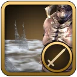

Commander
Brugg Ironjaw
Brugg Ironjaw, the tank commander, with the Barrel Roller and Innkeeper builds.
A tusked tavern-keeper with fists like anvils. Brugg holds the front line, and the more bodies crowd around him, the harder he is to move.
Brugg Ironjaw is one of the 4 commanders. A commander fights on your board beside your units, grows with your player level and is shaped by the build and talents you choose.
Stats by player level
Brugg has no star rank. Each fight uses the row for your current player level, so buying experience makes the commander stronger as well as widening your board. Commanders are offered at round 10, so the first row only matters if your level is still low by then. What each number means is on the stat reference.
| Player level | Health | Attack damage | Armour |
|---|---|---|---|
| 1 to 5 | 1,900 | 140 to 170 | 8 |
| 6 | 2,450 | 150 to 180 | 8 |
| 7 | 2,750 | 160 to 190 | 12 |
| 8 | 3,250 | 170 to 200 | 12 |
| 9 | 3,550 | 180 to 210 | 16 |
| 10 | 4,100 | 190 to 220 | 16 |
At every level
- Time between attacks
- 2 seconds
- Wind-up before the hit
- 0.4 seconds
- Magic resistance
- 15%
- Move speed
- 275
A commander has no mana bar. Its active abilities run on cooldowns instead, as Mana and casting explains.
Passive ability
Brugg has this ability whichever build you take.

Crowd Brawler
In the game's words: "Brugg loves a crowd: he gains 5 armour for every unit next to him, friend or foe, and regenerates health."
- Cast
- Passive. It is never cast and works for the whole combat.
Core ability
Whichever build you take, Brugg also has this ability.

Shrug It Off
In the game's words: "Brugg cracks his knuckles and wades in: for 5 seconds he takes 50% less damage, attacks much faster and heals for half the damage he deals."
- Cast
- Not cast with mana. It has a cooldown of 10 seconds, counted from the end of each cast, so with the cast point two casts are at least 11.5 seconds apart. The first cast starts 5 seconds into combat. The cooldown keeps running while the commander is stunned, but a stunned or silenced commander cannot start a cast.
- Cast point
- 1.5 seconds from the start of the cast to its effect.
- Targets
- The commander.
- Applies Shrug It Off (50% less physical and magical damage taken, +200% attack speed, +50% lifesteal on attack damage) to the commander for 5 seconds.
Talents
Each row opens when you reach that player level. You keep one option from each row for the rest of the match. These options are the same whichever build you take. A talent that belongs to one build is described under that build. See all talents.
| Player level | Option 1 | Option 2 |
|---|---|---|
| 4 |  Iron BellyThe commander: +400 maximum health. Iron BellyThe commander: +400 maximum health. |  Heavy HandsThe commander: +20% attack damage.The damage bonus applies to attacks only, not to ability damage. Heavy HandsThe commander: +20% attack damage.The damage bonus applies to attacks only, not to ability damage. |
| 6 |  UnbreakableShrug It Off becomes Unbreakable."Shrug It Off lasts 7 seconds." UnbreakableShrug It Off becomes Unbreakable."Shrug It Off lasts 7 seconds." |  Rounds for AllEvery ally in the fight when combat begins, including the commander and the units the commander summons at the start of combat: +15% attack speed. Units summoned later in the fight do not get it. Rounds for AllEvery ally in the fight when combat begins, including the commander and the units the commander summons at the start of combat: +15% attack speed. Units summoned later in the fight do not get it. |
| 8 |  HaymakerThe commander also casts Haymaker. HaymakerThe commander also casts Haymaker. |  Thick SkinThe commander: +8 armour, +20% magic resistance. Thick SkinThe commander: +8 armour, +20% magic resistance. |
| 10 | Set by the build. Barrel Roller:  Barrel AvalancheInnkeeper:  Open Bar Open Bar |  House RulesEvery ally in the fight when combat begins, including the commander and the units the commander summons at the start of combat: +5 armour. Units summoned later in the fight do not get it. House RulesEvery ally in the fight when combat begins, including the commander and the units the commander summons at the start of combat: +5 armour. Units summoned later in the fight do not get it. |
Build: Barrel Roller
Rolls barrels that soften the enemy and quicken the crew.
Ability of this build

Barrel Barrage
In the game's words: "Brugg rolls barrels across the board. Three enemies take physical damage and take 20% more damage for the rest of the combat; three allies gain 50 attack speed for 5 seconds."
- Cast
- Not cast with mana. It has a cooldown of 12 seconds, counted from the end of each cast, so with the cast point two casts are at least 12.5 seconds apart. The first cast starts 12 seconds into combat. The cooldown keeps running while the commander is stunned, but a stunned or silenced commander cannot start a cast.
- Cast point
- 0.5 seconds from the start of the cast to its effect.
- Targets
- 3 random enemies.
- Deals 300 (levels 1 to 5), then 400 / 500 / 600 / 700 / 800 (levels 6 to 10) physical damage to the targets.
- Applies Soaked (20% more physical and magical damage taken) to the targets for the rest of combat.
- Applies On Brugg's Tab (+50% attack speed) to 3 random allies (the commander included) for 5 seconds.
Talent of this build
| Player level | Talent |
|---|---|
| 10 | Barrel AvalancheBarrel Barrage becomes Barrel Avalanche."Barrel Barrage hits five enemies and five allies." |
The other talent options are in the talent table above.
Build: Innkeeper
Buys rounds that blunt the damage the crew takes.
Ability of this build

Last Round
In the game's words: "Brugg buys the whole crew a drink. For 5 seconds every ally shrugs off part of the damage it takes."
- Cast
- Not cast with mana. It has a cooldown of 10 seconds, counted from the end of each cast. The first cast starts 10 seconds into combat. The cooldown keeps running while the commander is stunned, but a stunned or silenced commander cannot start a cast.
- Cast point
- None: the effect comes at once.
- Targets
- All allies (the commander included).
- Applies On the House (30% less physical and magical damage taken) to the targets for 5 seconds.
Talent of this build
| Player level | Talent |
|---|---|
| 10 | Open BarLast Round becomes Open Bar."Last Round lasts 7 seconds and blocks more damage." |
The other talent options are in the talent table above.
Comparing the builds
Brugg has 2 builds. You choose one when you take the commander and it cannot be changed afterwards. The table shows what is different; the list under it shows what is the same whichever you have.
| Barrel Roller | Innkeeper | |
|---|---|---|
| In short | Rolls barrels that soften the enemy and quicken the crew. | Buys rounds that blunt the damage the crew takes. |
| Abilities only this build has | Barrel Barrage | Last Round |
| Talents only this build has | Barrel Avalanche | Open Bar |
| Talent choices | 4 | 4 |
- Abilities in every build
- Crowd BrawlerShrug It Off
- Talents in every build
- Iron BellyHeavy HandsUnbreakableRounds for AllHaymakerThick SkinHouse Rules
How Brugg plays in a match
These rules are the same for every commander, apart from where Brugg stands and which items Brugg may hold.
- Choosing. In the preparation phase of round 10 you are shown all 4 commanders. You pick the commander and one of its builds together. That preparation phase lasts 10 seconds longer to give you time. If the fight starts before you have chosen, you are given the first commander shown, with its first build.
- On the board. Brugg fights in melee, so the commander arrives in the front row, as near the centre as there is room. You may move it to any other cell of the board, but never to the bench, and it cannot be sold. It does not use up one of your unit places and it does not count toward any alliance. It can hold an item, with these exceptions. A commander has no mana bar, so it cannot hold the items that need a mana ability: Runescribed Quill, Cinder Core, Hourglass Prism, Renewal Orb, Archmage Codex. Brugg counts as melee, so it cannot hold the ranged only item Longshot Scope.
- Levelling. The commander is always the same level as you, up to level 10. Its stats and the strength of its abilities are read from that level at the start of each fight. At player levels 4, 6, 8 and 10 you choose a talent during preparation. If several are waiting, they are offered lowest level first, and any you have not chosen when the fight starts is settled for you with the first option.
- When it falls. If Brugg falls, the commander is out for the rest of that fight only and stands again, at full health, in the next round. Losing the commander costs you nothing beyond its help in the fight. A commander that is still standing when you win adds 1 to the damage your opponent takes, or 2 from round 31, whatever its level.
The full rules are on How commanders work.
Other commanders


Compare them all on the commanders page.